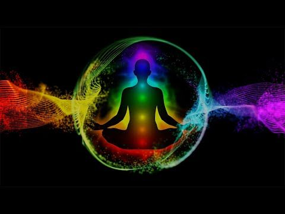

Восприятие цвета определяется физиологическими, психологическими и социальными факторами. различные цвета и их производные способны вызвать у человека различные эмоциональные состояния, например: радость, грусть, беспокойство, меланхолию и др. Кроме того, оттенки одного и того же цвета могут задавать разный эмоциональный тон. Замечено, что в теплых оттенках больше «жизни», они активизируют деятельность; холодные релаксируют, располагают к отдыху.
Красный: стимулирует, кратковременно повышает работоспособность, длительно утомляет. Дыхание и пульс человека, долгое время наблюдающего красный цвет, изменяются.
Оранжевый: бодрит, улучшает настроение, полезен детям. Он производит радостное впечатление, вызывает положительные эмоции, стремление к движению, активизирует деятельность человека.
Желтый: создает позитив, ускоряет раскрытие личности, смягчает негатив. Он ассоциируется с солнечным светом, способствует созданию хорошего настроения, выражает освобождение, психологическую способность к раскрытию.
Коричневый: формирует комфорт, надежность, темные оттенки ухудшают самочувствие. Это цвет надежности и здравого смысла, но некоторые его оттенки способны вызвать отрицательные эмоции.
Зеленый: успокаивает, снимает напряжение, восстанавливает гармонию. Цвет располагает к легкому, непринужденному общению, способствует отдыху, положительно влияет на кровяное давление, вызывая ощущение гармонии и способствуя, таким образом, релаксации.
Синий: спокойный, пассивный, под его воздействием снижается работоспособность, возникает состояние созерцательности и размышления. Однако, затененный, тусклый синий цвет порождает чувство страха, ощущение потерянности.
Фиолетовый: связан с творчеством, тормозит жизнедеятельность, ухудшает работоспособность. Фиолетовые оттенки предпочитают художники и любители живописи.
Белый: символизирует свободу, придает силу, подчеркивает уважение. Люди, предпочитающие этот цвет, аккуратны в общении, хорошо чувствуют собеседника, благородны.
Серый: стабилизирует, нейтральные оттенки полезны, темные угнетают. Этот цвет производит впечатление стабильности, здравого смысла, вместе с тем некоторые его оттенки унылы и способны вызывать грустные эмоции, а темно-серые оттенки – даже подавлять.
Черный: обозначает протест, агрессию, чрезмерное употребление негативно отражается на настроении и самочувствии. Постоянный выбор черного свидетельствует о наличии кризисного состояния и характеризует агрессивное неприятие мира или себя.